9 Estimation et intervalles de confiance
Dans cette partie nous allons construire des échantillons par simulation et nous intéresser à l’étude de la moyenne de ces échantillons.
9.1 Générer des observations selon des lois de probabilités
R étant un logiciel de statistique, il est bien entendu possible de
- visualiser
- calculer des indicateurs (quantiles, probabilités…)
- générer des observations
pour toutes les lois classiques de probabilités. Chaque loi va être identifiée par une chaîne de caractères :
| Loi | Chaîne |
|---|---|
| Binomiale | binom |
| Poisson | pois |
| Uniforme | unif |
| Exponentielle | exp |
| Normale | norm |
Un préfixe permettra de spécifier l’action que l’on souhaite effectuer sur la loi :
- d : calculer la densité pour une loi continue ou la fonction de masse pour une loi discrète
- q : calculer les quantiles
- r : générer des observations.
On pourra par exemple :
Calculer la densité de la loi \(\mathcal N(0,1)\) en -1,0,1 avec
dnorm(c(-1,0,1),mean=0,sd=1)[1] 0.2419707 0.3989423 0.2419707Calculer les quantiles d’ordre 0.05, 0.5 et 0.95 de la loi \(\mathcal N(0,1)\) en -1,0,1 avec
qnorm(c(0.05,0.5,0.95),mean=0,sd=1)[1] -1.644854 0.000000 1.644854Générer 10 observations selon une loi \(\mathcal N(0,1)\) avec
rnorm(10,mean=0,sd=1)[1] -1.42710099 0.58261915 -0.32025181 1.19344672 1.10258200 1.40879070 [7] 0.01185247 0.70595264 -0.39462244 -2.89997478
Exercice 9.1 (Loi binomiale) On étudie les fonctions R associées à la loi binomiale.
Soit \(X\) un variable de loi binomiale \(B(20,0.6)\). Calculer la probabilité que \(X\) soit égale à 1,5,10,15.
dbinom(c(1,5,10,15),size=20,prob=0.6)[1] 3.298535e-07 1.294494e-03 1.171416e-01 7.464702e-02Pour la même loi calculer la probabilités : \[\mathbf P(X\leq 13),\quad\mathbf P(X>13),\quad \mathbf P(X\geq 13)\quad\text{et}\quad \mathbf P(X\in[8,15]).\]
Pour la première il suffit d’utiliser
pbinom:pbinom(13,size=20,prob=0.6)[1] 0.7499893On remarque ensuite que \[\mathbf P(X>13)=1-\mathbf P(X\leq 13)\quad\text{et}\quad\mathbf P(X\geq 13)=\mathbf P(X>13)+\mathbf P(X=13)\]
donc
1-pbinom(13,size=20,prob=0.6)[1] 0.25001071-pbinom(13,size=20,prob=0.6)+dbinom(13,size=20,prob=0.6)[1] 0.4158929Pour la dernière, on utilise \[\mathbf P(X\in[8,15]=\mathbf P(X\leq 15)-\mathbf P(X\leq 8)+\mathbf P(X=8)\]
pbinom(15,size=20,prob=0.6)-pbinom(8,size=20,prob=0.6)+dbinom(8,size=20,prob=0.6)[1] 0.9280191On aurait aussi pu faire
sum(dbinom(8:15,size=20,prob=0.6))[1] 0.9280191Représenter le diagramme en barre associé à la loi \(B(20,0.6)\). On pourra utiliser l’argument stat=“identity” dans la fonction geom_bar.
prob <- dbinom(0:20,size=20,prob=0.6) df <- data.frame(x=0:20,prob=prob) ggplot(df)+aes(x=x,y=prob)+geom_bar(stat="identity",width=0.15)+theme_classic()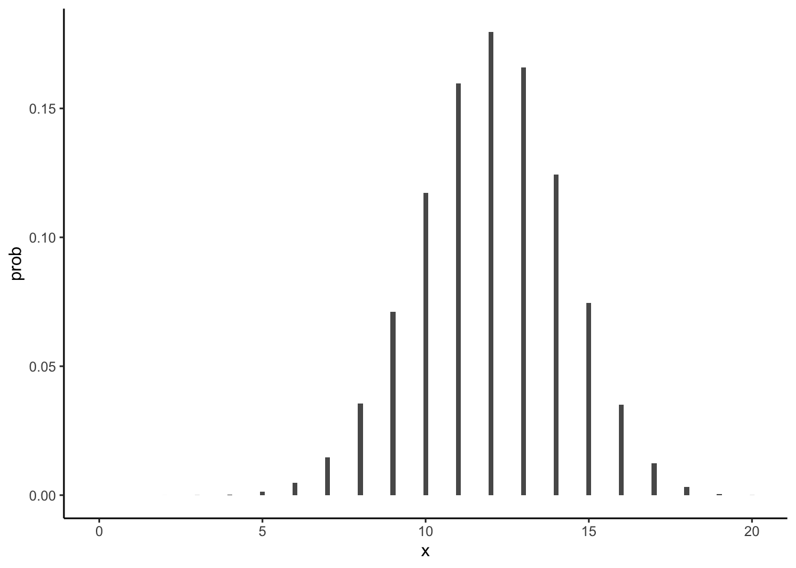
Générer un échantillon de taille 5000 selon la loi \(B(20,0.6)\). Tracer le diagramme en barres associé à cet échantillon et comparer le à celui de la question précédente.
X <- rbinom(5000,size=20,prob=0.6) df1 <- data.frame(X=X) ggplot(df1)+aes(x=X,y=..prop..)+geom_bar(width=0.15)+theme_classic()+xlim(c(0,20))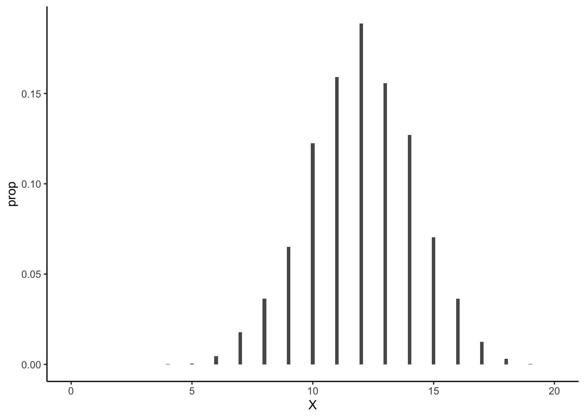
On peut visualiser les digrammes en barres cote à cote avec
prop <- table(X)/5000 prop1 <- data.frame(X=as.numeric(names(prop)),Freq=as.numeric(prop)) df2 <- full_join(df,prop1,by=c("x"="X")) names(df2)[2:3] <- c("Theo","Emp") df2[is.na(df2)] <- 0 df3 <- df2 |> pivot_longer(-x,names_to="type",values_to="valeur") ggplot(df3)+aes(x=x,y=valeur,fill=type)+geom_bar(stat="identity",position='dodge',width=0.25)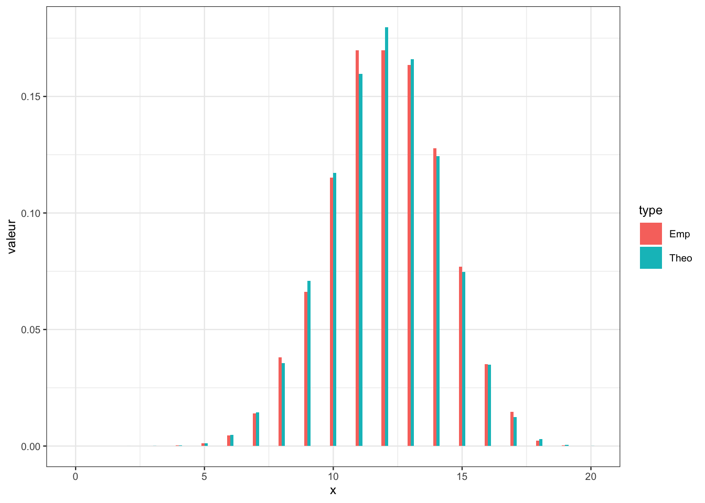
Exercice 9.2 (Loi normale) On considère ici la loi normale \(\mathcal N(\mu,\sigma^2)\).
Tracer la densité de la loi \(\mathcal N(0,1)\).
df <- tibble(x=seq(-3,3,by=0.01),y=dnorm(x)) ggplot(df)+aes(x=x,y=y)+geom_line()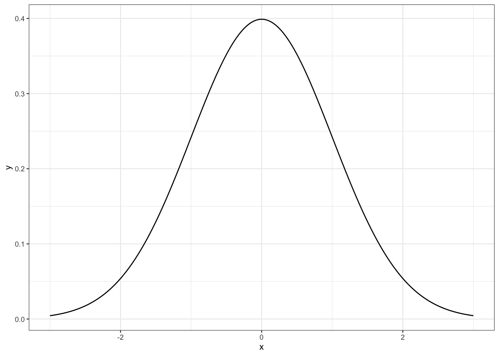
Soit \(X\) une variable aléatoire de loi \(\mathcal N(2,2^2)\) (variance 4, écart-type 2). Calculer les probabilités suivantes : \[\mathbf P(X=2),\quad \mathbf P(X\leq 2),\quad \mathbf P(X<2),\quad \mathbf P(X>3).\]
La première probabilité est nulle. Les deux suivantes sont égales et valent
pnorm(2,2,2)[1] 0.5On obtient la dernière avec
1-pnorm(3,2,2)[1] 0.3085375Générer un échantillon de taille 5000 selon la loi \(\mathcal N(0,1)\). Tracer l’histogramme associé à cet échantillon et comparer le à la densité tracée à la question précédente (on pourra superposer les 2 représentations).
df1 <- data.frame(X=rnorm(5000)) ggplot(df1)+aes(x=X,y=..density..)+geom_histogram()+theme_classic()+ geom_line(data=df,aes(x=x,y=y),color="red",size=1)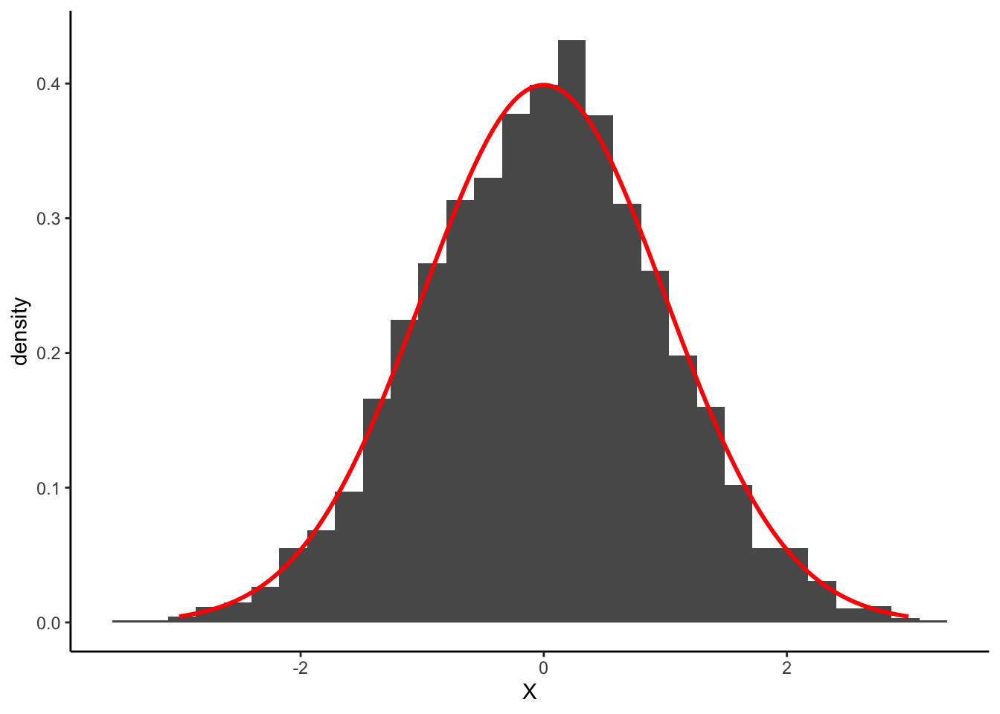
9.2 Une étude numérique de la moyenne empirique.
On considère un échantillon de \(x_1,\dots,x_n\) i.i.d de loi uniforme sur \([a,b]\) avec \(a\) et \(b\) supposés inconnus. Le problème est d’estimer l’espérance de cette loi uniforme \[\mathbf E[X]=\frac{a+b}{2}.\]
Un estimateur naturel est la moyenne empirique \[\bar x_n=\frac{1}{n}\sum_{i=1}^nx_i\] Remarquons déjà que la moyenne empirique dépend des observations \(x_1,\dots,x_n\) : la moyenne va donc changer lorsque les observations changent.
9.2.1 Exemple
Pour fixer les idées, on suppose dans cette partie que \(a=0\) et \(b=1\). L’espérance à estimer vaut donc 0.5 (on peut faire comme si on le la connaissait pas.)
On considère deux échantillons de taille 20 générées selon une loi uniforme entre 0 et 1 :
ech1 <- runif(20)
ech2 <- runif(20)
df <- data.frame(ech1,ech2)Les moyennes empiriques pour ces deux échantillons sont différentes :
df |> summarise_all(mean) ech1 ech2
1 0.4262927 0.4334001La moyenne empirique peut-être considérée comme une variable aléatoire : elle va donc posséder une loi de probabilité, une espérance… Si on considère l’exemple précédent, on sent bien que la distribution de la moyenne empirique doit
- se répartir autours de 0.5 (qui est la valeur à estimer).
- être de plus en plus concentrée autours de 0.5 lorsque le nombre d’observations \(n\) augmente.
On peut visualiser ce fait en considérant un grand nombre d’échantillon et en regardant comment se comporte les valeurs moyennes de chaque échantillon. Pour cela on
génère un nombre \(B\) (grand) d’échantillons de taille \(n=20\) selon une loi uniforme entre 0 et 1.
set.seed(1234) df <- matrix(runif(20*5000),nrow=20) |> as.data.frame()calcule les moyennes obtenues pour chaque échantillon
moy <- df |> summarize_all(mean) head(t(moy))[,1] V1 0.4719301 V2 0.4449401 V3 0.4833523 V4 0.3740339 V5 0.4132300 V6 0.3734092visualise la distribution de la moyenne de chaque échantillon (en traçant l’histogramme de ces valeurs par exemple).
moy <- data.frame(M=t(moy)) ggplot(moy)+aes(x=M,y=..density..)+geom_histogram(bins=20)+theme_classic()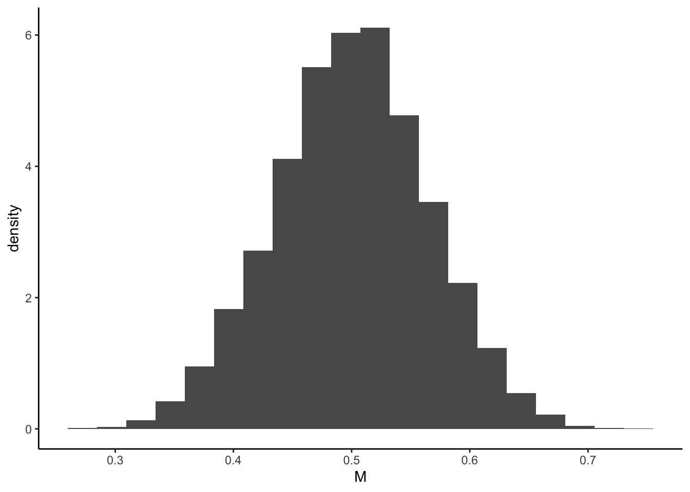
On voit que cette distribution semble se comporter comme une distribution gaussienne autours de la vraie valeur (0.5). Le théorème central limite confirme (et surtout prouve) ce constat. En effet, le théorème central limite nous dit que cette moyenne \(\bar x_n\) vérifie \[\sqrt{n}\frac{\bar x_n-\mu}{\sigma}\to \mathcal N(0,1)\] avec \(\mu=0.5\) et \(\sigma=1/\sqrt{12}\) ici. On a donc \[\sqrt{n}\frac{\bar X_n-0.5}{1/\sqrt{12}}\to \mathcal N(0,1)\] Ce qui signifie qu’on peut approcher la loi de \(\bar X_n\) par la loi \(\mathcal N(0.5,1/(12n))\) avec \(n=20\). On le retrouve sur notre exemple en supperposant cette distribution gaussienne sur l’histogramme
x <- seq(0.25,0.75,by=0.001)
df <- data.frame(x=x,y=dnorm(x,0.5,1/(sqrt(12*20))))
ggplot(moy)+aes(x=M,y=..density..)+geom_histogram(bins=20)+
geom_line(data=df,aes(x=x,y=y),color="red",size=2)+xlab("x")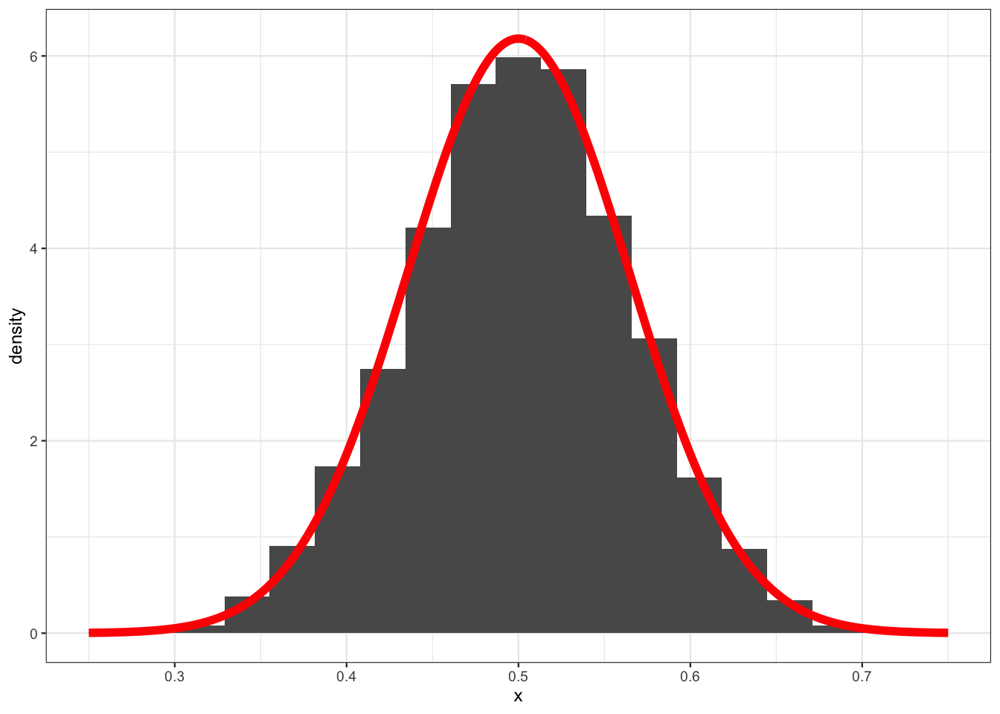
Exercice 9.3 (Théorème central limite) Faire le même travail pour des tailles d’échantillon de 50, 100 et 500. Interpréter.
df1 <- matrix(runif(20*5000),nrow=20)
df2 <- matrix(runif(50*5000),nrow=50)
df3 <- matrix(runif(100*5000),nrow=100)
df4 <- matrix(runif(500*5000),nrow=500)
df <- data.frame(n20=apply(df1,2,mean),n50=apply(df2,2,mean),
n100=apply(df3,2,mean),n500=apply(df4,2,mean))
df1 <- df |> gather(key="taille_ech",value=x)
ggplot(df1)+aes(x=x,y=..density..)+geom_histogram(bins=50)+facet_wrap(~fct_relevel(taille_ech,"n20","n50","n100","n500"))+theme_classic()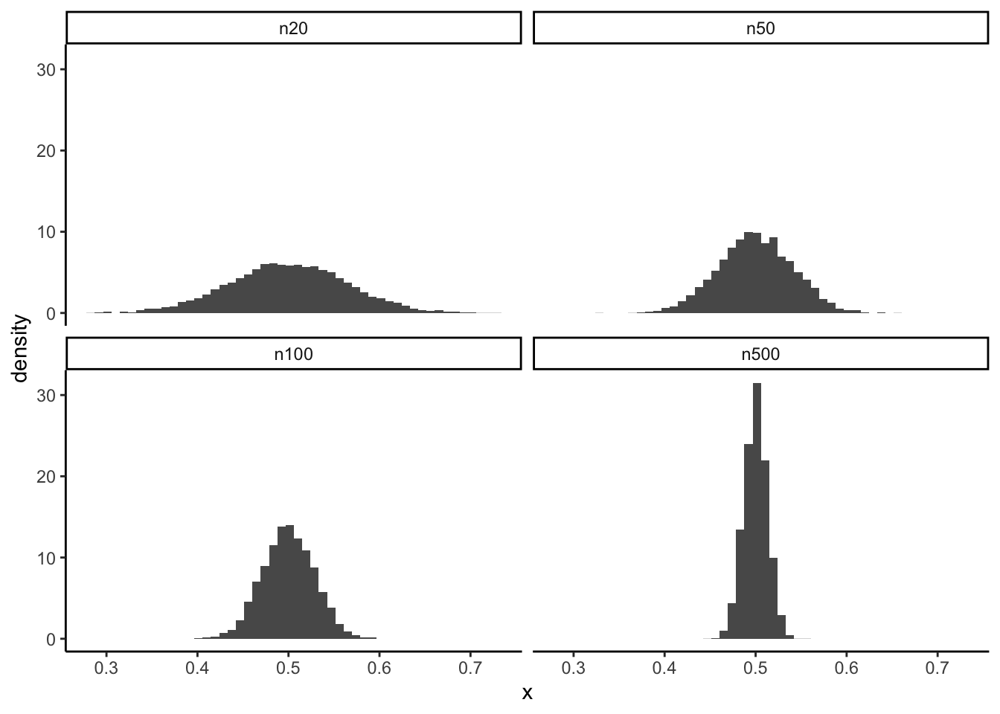
On remarque que :
- dans tous les cas, la distribution de la moyenne empirique semble être gaussienne et centrée en 0.5 (qui est la valeur à estimer).
- la dispersion augmente lorsque le nombre d’observations \(n\) diminue (moins précis).
Exercice 9.4 (Théorème central limite (toujours)) Faire le même exercice pour une loi gaussienne \(\mathcal N(1,2)\) et une loi de Bernoulli \(\mathcal B(0.6)\).
Pour la loi \(\mathcal N(1,2)\)
df1 <- matrix(rnorm(20*5000,1,2),nrow=20)
df2 <- matrix(rnorm(50*5000,1,2),nrow=50)
df3 <- matrix(rnorm(100*5000,1,2),nrow=100)
df4 <- matrix(rnorm(500*5000,1,2),nrow=500)
df <- data.frame(n20=apply(df1,2,mean),n50=apply(df2,2,mean),
n100=apply(df3,2,mean),n500=apply(df4,2,mean))
df1 <- df |> gather(key="taille_ech",value=x)
ggplot(df1)+aes(x=x,y=..density..)+geom_histogram(bins=50)+
facet_wrap(~fct_relevel(taille_ech,"n20","n50","n100","n500"),scales="fixed")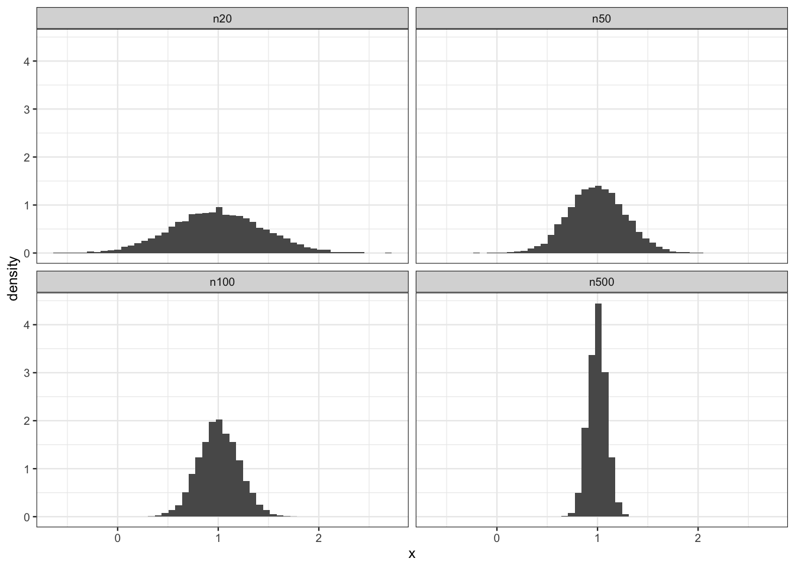
Pour la \(\mathcal B(0.6)\)
df1 <- matrix(rbinom(20*50000,1,0.6),nrow=20)
df2 <- matrix(rbinom(50*50000,1,0.6),nrow=50)
df3 <- matrix(rbinom(100*50000,1,0.6),nrow=100)
df4 <- matrix(rbinom(500*50000,1,0.6),nrow=500)
df <- data.frame(n20=apply(df1,2,mean),n50=apply(df2,2,mean),
n100=apply(df3,2,mean),n500=apply(df4,2,mean))
df1 <- df |> gather(key="taille_ech",value=x)
ggplot(df1)+aes(x=x,y=..density..)+geom_histogram(bins=30)+
facet_wrap(~fct_relevel(taille_ech,"n20","n50","n100","n500"),scales="fixed")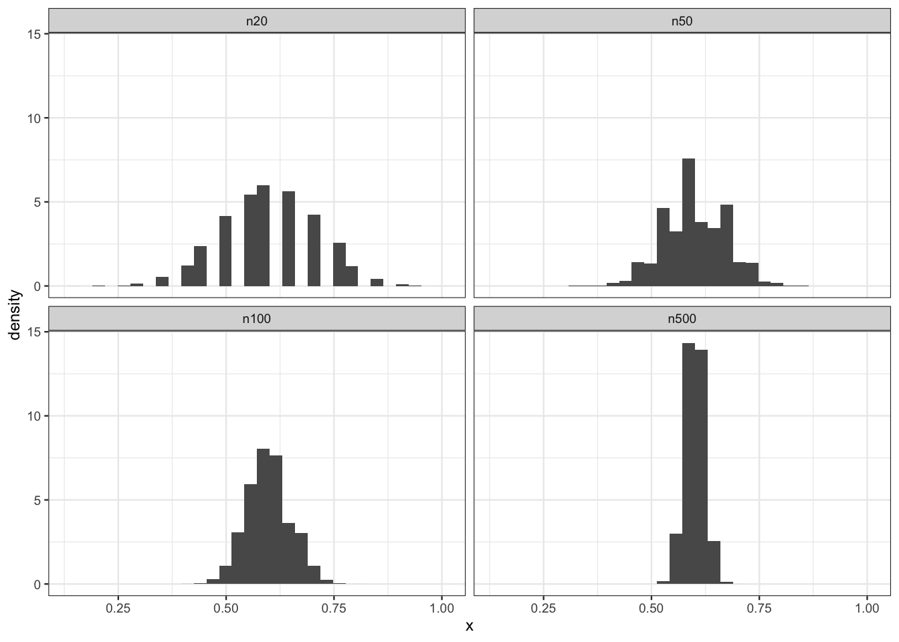
Dans tous ces cas, on retrouve bien que la moyenne empirique a une distribution gaussienne autours de la valeur à estimer (l’espérance). La dispersion dépend de :
- la dispersion des observations (de la loi de \(x_i\)) ;
- du nombre d’observations.
La moyenne empirique est donc d’autant plus précise que la variance des observations est petite et que le nombre d’observations est grand. Le théorème central limite permet de quantifier tout ça et donc de déduire des intervalles de confiance et de faire des tests…
9.3 Intervalles de confiance
On cherche ici à illustrer numériquement le niveau d’un intervalle de confiance. On rappelle que \([A,B]\) est un IC de niveau \(1-\alpha\) pour un paramètre \(\theta\) si \[P(\theta\in[A,B])=1-\alpha.\]
Exercice 9.5 (IC pour l’espérance d’une gaussienne) On fixe ici le niveau à 0.95 (\(\alpha=0.05\)). On considère \(n\) observations \(x_1,\dots,x_n\) i.i.d de loi \(\mathcal N(\mu,1)\) et on cherche un intervalle de confiance pour \(\mu\).
Générer \(n=100\) observations i.i.d. selon la loi \(\mathcal N(\mu,1)\) avec \(\mu=1\).
ech <- rnorm(100,1,1)Calculer un intervalle de confiance pour \(\mu\) de niveau 0.95.
t.test(ech)$conf.int[1] 0.8038101 1.2314117 attr(,"conf.level") [1] 0.95Selon-vous, peut-on dire que la probabilité que \(\mu\) appartienne à l’intervalle trouvé est de 0.95 ? Si non, comment peut-on interpréter cette formule.
Non. Dans notre cas, \(\mu\) (qui vaut 1) appartient à l’intervalle trouvé. Dans la vraie vie, \(\mu\) est inconnu. Ce que la formule nous dit, c’est que si nos données sont issues d’un loi \(\mathcal N(\mu,\sigma^2)\), on a une probabilité de 0.95 que \(\mu\) appartienne à l’intervalle trouvé. Donc si on génère un très grand nombre d’échantillon i.i.d selon la loi \(\mathcal N(\mu,\sigma^2)\), alors dans 95% des cas, la vraie valeur de \(\mu\) appartiendra à l’intervalle trouvé. C’est ce qu’on propose de vérifier dans les questions suivantes.
Générer 5000 échantillons i.i.d. de loi \(\mathcal N(1,1)\) de tailles 100. On pourra mettre le tout dans une matrice de dimension \(5000\times 100\).
mu <- 1 n <- 100 B <- 5000 X <- matrix(rnorm(n*B,mean=mu),nrow=B)Calculer un intervalle de confiance de niveau 0.95 pour chacun des 5000 échantillons. On pourra utiliser une boucle for ou la fonction apply.
b1 <- apply(X,1, function(x) t.test(x)$conf.int[1:2])Sur les 5000 intervalles obtenus, calculer le nombre de fois où la vraie valeur de \(\mu\) (en l’occcurence ici 1) se trouve à l’intérieur de l’intervalle.
b2 <- as.data.frame(t(b1)) b2 |> mutate(test=mu>V1 & mu<V2) |> summarize(mean(test))mean(test) 1 0.9494Refaire les questions 5-6-7 avec des IC de niveau 0.90.
c1 <- apply(X,1, function(x) t.test(x,conf.level=0.90)$conf.int[1:2]) c2 <- as.data.frame(t(c1)) c2 |> mutate(test=mu>V1 & mu<V2) |> summarize(mean(test))mean(test) 1 0.898
Exercice 9.6 (IC pour les iris de Fisher) On considère les données sur les iris de Fisher. Construire un intervalle de confiance de niveau 90% pour les paramètres suivants :
La longueur de Pétales moyenne
t.test(iris$Petal.Length,conf.level=0.90)$conf.int[1] 3.519434 3.996566 attr(,"conf.level") [1] 0.9La largeur de Sépales moyenne de l’espèce Setosa
sep_set <- iris |> filter(Species=="setosa") |> select(Sepal.Width) t.test(sep_set,conf.level=0.90)$conf.int[1] 3.338124 3.517876 attr(,"conf.level") [1] 0.9#ou iris |> filter(Species=="setosa") |> select(Sepal.Width) |> t.test(conf.level=0.9)One Sample t-test data: select(filter(iris, Species == "setosa"), Sepal.Width) t = 63.946, df = 49, p-value < 2.2e-16 alternative hypothesis: true mean is not equal to 0 90 percent confidence interval: 3.338124 3.517876 sample estimates: mean of x 3.428La largeur de Sépales moyenne des espèces Versicolor et Virginica
sep_vervin <- iris |> filter(Species=="versicolor" | Species =="virginica") |> select(Sepal.Width) t.test(sep_vervin,conf.level=0.90)$conf.int[1] 2.81675 2.92725 attr(,"conf.level") [1] 0.9
Exercice 9.7 (IC pour une proportion) On considère \(x_1,\dots,x_n\) un échantillon i.i.d issu d’une loi de Bernoulli de paramètre \(p\in[0,1]\) inconnu.
Proposer un estimateur \(\widehat p\) pour \(p\).
On peut prendre \[\widehat p=\bar x_n=\frac{1}{n}\sum_{i=1}^nx_i.\]
A l’aide du TCL, obtenir la loi asymptotique de \(\hat p\).
On a d’après la TCL
\[\sqrt{n}\frac{\widehat{p}-p}{\sqrt{p(1-p)}}\stackrel{\mathcal L}{\to}\mathcal N(0,1)\]
En déduire un intervalle de confiance de niveau \(1-\alpha\) pour \(p\).
On déduit que \[\left[\widehat p-q_{1-\alpha/2}\sqrt{\frac{p(1-p)}{n}}, \widehat p+q_{1-\alpha/2}\sqrt{\frac{p(1-p)}{n}}\right].\]
est un IC de niveau \(1-\alpha\).
Que pouvez-vous reprocher à l’intervalle proposé à la question précédente ?
L’IC proposé dépend de \(p\) qui est inconnu ! Il ne sera donc pas calculable en pratique !
Proposer une solution.
Un solution classique consiste à remplacer le paramètre \(p\) inconnu par son estimateur \(\widehat p\). On obtient ainsi l’IC \[\left[\widehat p-q_{1-\alpha/2}\sqrt{\frac{\widehat p(1-\widehat p)}{n}}, \widehat p+q_{1-\alpha/2}\sqrt{\frac{\widehat p(1-\widehat p)}{n}}\right].\]
Exercice 9.8 (IC pour une proportion (suite)) Afin de tenter de deviner qui va gagner une élection entre deux candidats \(A\) et \(B\) on effectue un sondage. On demande à 100 personnes pour qui elles vont voter. Les résultats sont reportés dans le vecteur suivant.
set.seed(12345)
res <- rbinom(100,1,0.52)On désigne par \(p\) la propotion (inconnue) d’électeurs qui vont voter pour \(A\).
Proposer et calculer un estimateur de \(p\).
On peut prendre la moyenne empirique \[\widehat p=\bar x_n=\frac{1}{n}\sum_{i=1}^nx_i.\] On la calcule avec
phat <- mean(res) phat[1] 0.54Que pouvez-vous conclure a priori.
Il semble que \(A\) va remporter l’élection.
En vous basant sur l’exercice précédent, calculer un intervalle de confiance de niveau 95% pour \(p\).
On le calcule avec
n <- length(res) binf <- phat-qnorm(0.975)*sqrt(phat*(1-phat)/n) bsup <- phat+qnorm(0.975)*sqrt(phat*(1-phat)/n) c(binf,bsup)[1] 0.4423159 0.6376841Est-ce que l’intervalle obtenu conforte votre conclusion de la question 2 ?
Non, en effet 0.5 se trouve dans l’intervalle de confiance !
Calculer un intervalle de confiance pour \(p\) à l’aide de la fonction prop.test.
prop.test(sum(res),n)1-sample proportions test with continuity correction data: sum(res) out of n, null probability 0.5 X-squared = 0.49, df = 1, p-value = 0.4839 alternative hypothesis: true p is not equal to 0.5 95 percent confidence interval: 0.4377639 0.6391280 sample estimates: p 0.54On remarque que l’IC obtenu ne correspond pas exactement à celui que nous avons calculé à la question 3. La fonction prop.test utilise une solution plus pertinente que de remplacer \(p\) par son estimateur. La correction utilisée dans prop.test est plus préciser, il est recommandé d’utiliser celle là.
Exercice 9.9 (Comparaison de moyennes) Pour le jeu de données decathlon disponible ici
library(FactoMineR)
data(decathlon)on souhaite comparer les performances au 100m en fonction de la compétition (Decastar vs JO).
Calculer un intervalle de confiance de niveau 95% pour la vitesse moyenne au 100m au Decastar.
perf.D <- decathlon |> filter(Competition=="Decastar") |> select(`100m`) t.test(perf.D)One Sample t-test data: perf.D t = 163.64, df = 12, p-value < 2.2e-16 alternative hypothesis: true mean is not equal to 0 95 percent confidence interval: 11.02659 11.32418 sample estimates: mean of x 11.17538Même question pour les jeux olympiques.
perf.JO <- decathlon |> filter(Competition=="OlympicG") |> select(`100m`) t.test(perf.JO)One Sample t-test data: perf.JO t = 250.02, df = 27, p-value < 2.2e-16 alternative hypothesis: true mean is not equal to 0 95 percent confidence interval: 10.82613 11.00530 sample estimates: mean of x 10.91571Pouvez-vous conclure sur la question posée ? Si non, que faire ?
Il n’est pas possible de conclure. La bonne approche consiste à calculer un intervalle de confiance sur la différence moyenne des performances au 100m entre les deux compétitions et de regarder si 0 se situe dans l’intervalle.
On obtient l’intervalle avec
t.test(perf.D,perf.JO)Welch Two Sample t-test data: perf.D and perf.JO t = 3.2037, df = 22.168, p-value = 0.00407 alternative hypothesis: true difference in means is not equal to 0 95 percent confidence interval: 0.09164794 0.42769272 sample estimates: mean of x mean of y 11.17538 10.915710 n’étant pas dans l’intervalle, on conclut que les performances sont différentes. On verra par la suite que les tests d’hypothèses permettent de traiter ce genre de questions de façons plus efficace.
10 Vers des modèles plus complexes
On présente un cas d’étude dans cette partie. On se pose le problème d’étudier l’impact de l’activité sportive combiné à un régime sur le cancer. Pour se faire, on étudie l’évolution de tumeurs cancéreuses chez des souris réparties en 4 groupes :
CTL: groupe contrôleEPA: régimeET: activité physiqueEPA ET: régime et activité physique
On importe les données
(data1 <- readxl::read_excel("data/donnees_tum.xlsx", sheet = "Tumeur",skip=1))# A tibble: 53 × 20
Id J5 J8 J12 J14 J16 J20 J22 J26 J28 J30 J34
<chr> <dbl> <dbl> <dbl> <dbl> <dbl> <dbl> <dbl> <dbl> <dbl> <dbl> <dbl>
1 CTL 1 11.3 10.5 11.1 10.4 11.9 19.8 21.8 30.1 33.1 43.3 85.5
2 CTL 2 0 5.29 5.83 5.22 5.77 4.47 4.79 5.06 5.13 5.00 6.21
3 CTL 3 10.3 16.8 11.4 13.1 13.4 22.9 25.1 24.3 42.1 57.2 104.
4 CTL 4 6.00 11.4 25.5 32.0 34.3 69.2 85.2 137. 187. 212. 278.
5 CTL 5 15.9 11.6 14.1 11.0 18.0 19.5 21.0 47.4 82.1 81.7 156.
6 CTL 6 0 0 3.86 3.65 10.1 14.1 18.8 27.0 46.2 54.2 75.0
7 CTL 7 10.8 10.9 19.0 16.9 22.2 31.1 33.9 34.4 62.4 79.3 152.
8 CTL 8 9.00 13.3 16.2 15.4 16.4 22.6 22.0 16.9 15.5 17.8 29.4
9 CTL 9 3.75 11.2 10.5 11.3 30.3 52.5 59.4 82.1 97.7 126. 218.
10 CTL 10 14.1 16.3 19.4 23.1 26.7 25.3 38.8 38.2 44.5 54.5 89.5
# ℹ 43 more rows
# ℹ 8 more variables: J36 <dbl>, J40 <dbl>, J42 <dbl>, J44 <dbl>, J48 <dbl>,
# J50 <dbl>, J54 <dbl>, J56 <dbl>dim(data1)[1] 53 20et on les met sous un format long :
data2 <- data1 |> pivot_longer(-c(Id),names_to="Day",values_to = "Volume") |>
mutate(day_num=as.numeric(str_remove(Day,'[J]')),
groupe=fct(str_remove(Id,'[0-9]+')),
Day=fct(Day))
data2# A tibble: 1,007 × 5
Id Day Volume day_num groupe
<chr> <fct> <dbl> <dbl> <fct>
1 CTL 1 J5 11.3 5 "CTL "
2 CTL 1 J8 10.5 8 "CTL "
3 CTL 1 J12 11.1 12 "CTL "
4 CTL 1 J14 10.4 14 "CTL "
5 CTL 1 J16 11.9 16 "CTL "
6 CTL 1 J20 19.8 20 "CTL "
7 CTL 1 J22 21.8 22 "CTL "
8 CTL 1 J26 30.1 26 "CTL "
9 CTL 1 J28 33.1 28 "CTL "
10 CTL 1 J30 43.3 30 "CTL "
# ℹ 997 more rows10.1 Étude descriptive et visualisation
On commence par visualiser l’évolution de la tumeur en fonction du groupe à l’aide d’un boxplot :
ggplot(data2)+aes(x=as.factor(day_num),y=Volume,color=groupe)+
geom_boxplot()+xlab("Day")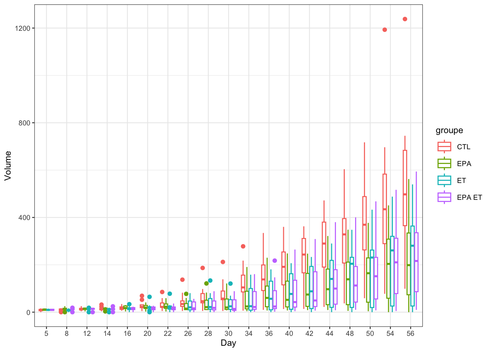
Il semble que les évolutions soient différentes, notamment pour le groupe contrôle.
On effectue maintenant une Anova pour tester l’effet groupe. Les répétitions portant sur le temps (et non sur les groupes), on fait l’ANOVA à deux facteurs avec (voir https://www.math.univ-toulouse.fr/~besse/Wikistat/pdf/st-m-modmixt7-mesrepet.pdf)
groupecomme effet interDaycomme effet intra
library(rstatix)
res.aov <- anova_test(
data = data2, dv = Volume, wid = Id,
between = groupe,
within = Day
)
get_anova_table(res.aov)ANOVA Table (type III tests)
Effect DFn DFd F p p<.05 ges
1 groupe 3.00 45.00 6.123 1.00e-03 * 0.155
2 Day 1.22 54.76 75.359 4.41e-13 * 0.480
3 groupe:Day 3.65 54.76 7.100 1.72e-04 * 0.207L’interaction est significative.
On peut aller un peu plus loin avec les tests post hoc. Par exemple, pour l’effet groupe à chaque pas de temps :
one.way <- data2 |>
group_by(day_num) |>
anova_test(dv = Volume, wid = Id, between = groupe) |>
get_anova_table() |>
adjust_pvalue(method = "bonferroni")
one.way |> as_tibble() |>
arrange(day_num) |> DT::datatable() Le groupe devient “de plus en plus significatif” lorsque le temps augmente (y compris avec la correction de Bonferonni).
On regarde maintenant les comparaisons par paires :
pwc <- data2 |>
group_by(Day) |>
pairwise_t_test(
Volume ~ groupe,
p.adjust.method = "bonferroni"
)
DT::datatable(pwc)pwc |> filter(p.signif!="ns" | p.adj.signif!="ns") |> arrange(p)# A tibble: 34 × 10
Day .y. group1 group2 n1 n2 p p.signif p.adj p.adj.signif
<fct> <chr> <chr> <chr> <int> <int> <dbl> <chr> <dbl> <chr>
1 J56 Volume "CTL " "EPA E… 13 14 1.83e-4 *** 0.0011 **
2 J56 Volume "CTL " "EPA " 13 13 2.22e-4 *** 0.00133 **
3 J56 Volume "CTL " "ET " 13 13 3.57e-4 *** 0.00214 **
4 J50 Volume "CTL " "EPA E… 13 14 3.71e-4 *** 0.00222 **
5 J54 Volume "CTL " "EPA " 13 13 3.71e-4 *** 0.00223 **
6 J50 Volume "CTL " "EPA " 13 13 4 e-4 *** 0.0024 **
7 J54 Volume "CTL " "EPA E… 13 14 5.2 e-4 *** 0.00312 **
8 J54 Volume "CTL " "ET " 13 13 6.59e-4 *** 0.00395 **
9 J48 Volume "CTL " "EPA E… 13 14 8.99e-4 *** 0.00539 **
10 J50 Volume "CTL " "ET " 13 13 1.08e-3 ** 0.00651 **
# ℹ 24 more rowsLe groupe CTL se retrouve fréquemment dans les comparaisons significatives.
10.2 Modèle mixte
Les données étant répétées dans le temps, on ne peut pas utiliser un modèle linéaire classique. Il faut dans ce cas entraîner un modèle mixte qui va pouvoir prendre en compte les effets individuels :
Après plusieurs essais et comparaisons de modèle, on retient le modèle avec
- comme
effet fixe: le temps au carré et l’interaction temps au carré vs groupe. - comme
effet aléatoire: la constante et le temps au carré.
library(nlme)
m1 <- lme(Volume~1+I(day_num^2)+I(day_num^2):(groupe),
random=list(Id=pdDiag(~1+I(day_num^2))),
data=data2,na.action=na.omit)
Anova(m1,type=3)Analysis of Deviance Table (Type III tests)
Response: Volume
Chisq Df Pr(>Chisq)
(Intercept) 17.050 1 3.641e-05 ***
I(day_num^2) 81.249 1 < 2.2e-16 ***
I(day_num^2):groupe 20.854 3 0.0001129 ***
---
Signif. codes: 0 '***' 0.001 '**' 0.01 '*' 0.05 '.' 0.1 ' ' 1On retrouve bien que l’interaction est significative. Au niveau des paramètres du modèle on a :
summary(m1)Linear mixed-effects model fit by REML
Data: data2
AIC BIC logLik
10249.63 10288.87 -5116.813
Random effects:
Formula: ~1 + I(day_num^2) | Id
Structure: Diagonal
(Intercept) I(day_num^2) Residual
StdDev: 27.17808 0.06523892 32.77535
Fixed effects: Volume ~ 1 + I(day_num^2) + I(day_num^2):(groupe)
Value Std.Error DF t-value p-value
(Intercept) -16.831664 4.076271 946 -4.129182 0e+00
I(day_num^2) 0.164154 0.018211 946 9.013850 0e+00
I(day_num^2):groupeEPA -0.098116 0.025751 946 -3.810174 1e-04
I(day_num^2):groupeET -0.092033 0.025751 946 -3.573908 4e-04
I(day_num^2):groupeEPA ET -0.096512 0.025287 946 -3.816676 1e-04
Correlation:
(Intr) I(d_^2) I(_^2):EP I(_^2):ET
I(day_num^2) -0.018
I(day_num^2):groupeEPA 0.000 -0.707
I(day_num^2):groupeET 0.000 -0.707 0.500
I(day_num^2):groupeEPA ET 0.000 -0.720 0.509 0.509
Standardized Within-Group Residuals:
Min Q1 Med Q3 Max
-5.702141384 -0.381625266 0.002515069 0.372061286 8.789202686
Number of Observations: 1003
Number of Groups: 53 Tous les coefficients de l’interaction sont significatifs et négatifs. Cela signifie que, le volume augmente moins vite avec de l’entraînement et du régime. On peut regarder ce qui se passe en changeant le groupe de référence :
groupe
EPA:m2 <- lme(Volume~1+I(day_num^2)+I(day_num^2):(groupe), random=list(Id=pdDiag(~1+I(day_num^2))), contrasts = list(groupe=contr.treatment(levels(data2$groupe),base=2)), data=data2,na.action=na.omit) summary(m2)$tTable |> round(4)Value Std.Error DF t-value p-value (Intercept) -16.8317 4.0763 946 -4.1292 0.0000 I(day_num^2) 0.0660 0.0182 946 3.6261 0.0003 I(day_num^2):groupeCTL 0.0981 0.0258 946 3.8102 0.0001 I(day_num^2):groupeET 0.0061 0.0258 946 0.2362 0.8133 I(day_num^2):groupeEPA ET 0.0016 0.0253 946 0.0634 0.9494groupe
ET:m3 <- lme(Volume~1+I(day_num^2)+I(day_num^2):(groupe), random=list(Id=pdDiag(~1+I(day_num^2))), contrasts = list(groupe=contr.treatment(levels(data2$groupe),base=3)), data=data2,na.action=na.omit) summary(m3)$tTable |> round(4)Value Std.Error DF t-value p-value (Intercept) -16.8317 4.0763 946 -4.1292 0.0000 I(day_num^2) 0.0721 0.0182 946 3.9600 0.0001 I(day_num^2):groupeCTL 0.0920 0.0258 946 3.5739 0.0004 I(day_num^2):groupeEPA -0.0061 0.0258 946 -0.2362 0.8133 I(day_num^2):groupeEPA ET -0.0045 0.0253 946 -0.1771 0.8595groupe
EPA - ET:m4 <- lme(Volume~1+I(day_num^2)+I(day_num^2):(groupe), random=list(Id=pdDiag(~1+I(day_num^2))), contrasts = list(groupe=contr.treatment(levels(data2$groupe),base=4)), data=data2,na.action=na.omit) summary(m4)$tTable |> round(4)Value Std.Error DF t-value p-value (Intercept) -16.8317 4.0763 946 -4.1292 0.0000 I(day_num^2) 0.0676 0.0175 946 3.8543 0.0001 I(day_num^2):groupeCTL 0.0965 0.0253 946 3.8167 0.0001 I(day_num^2):groupeEPA -0.0016 0.0253 946 -0.0634 0.9494 I(day_num^2):groupeET 0.0045 0.0253 946 0.1771 0.8595
À chaque fois le groupe CTL se distingue. Il est difficile d’établir des différences significatives entre les autres groupes. On peut enfin visualiser les effets fixes :
aa <- predict(m1,data2,level=0:1)
data3 <- data2 |>
mutate(prev=aa$predict.Id) |>
group_by(groupe,day_num) |>
summarize(moy=mean(prev))
ggplot(data3)+aes(x=day_num,y=moy,color=groupe)+geom_line()+geom_point()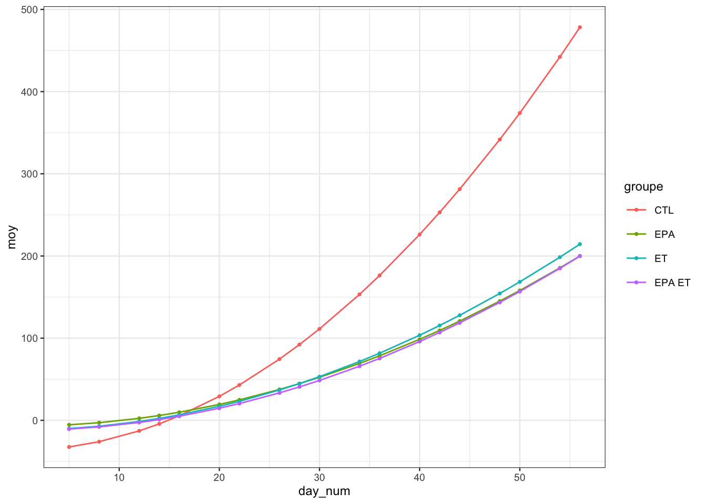